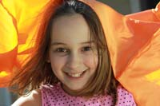
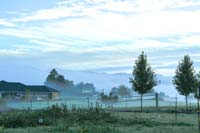
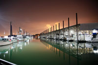
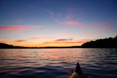
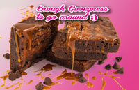
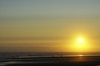

Portraits

My portraits have been about catching those moments that are fleeting in life. I pride myself in being able to have the camera settings right for those moments when the conditions are in perpetual flux. The only photo in this section that was planned is the last picture of the farmer girl Chyann. I really appreciated the tasteful way she pulled it off. It really was a Halloween costume.
Landscapes

Landscapes abound. The outdoors is something I really enjoy. Like the portraits, they are about capturing those moments that we pass over so quickly. These moments happen everyday, but we are just to busy to stop and take them in. With the exception of the red desert scene, all these photos are from everyday places around Portland Oregon.
Night Pics

Night shots are a lot of fun. They stretch your skills as a photographer and further your understanding of how bright a light is compared to total darkness. There is a delicate balance that needs to be achieved for the correct exposure. Just because the suns not up, doesn't mean there isn't much color to be had.
Water Pics

Water is one of my favorite subjects to photograph. It provides many textures, reflections and transparencies you won't find any place else. Water can effectively double the amount of color in any seen creating very dramatic effects. Capturing the many textures that water creates is very challenging.
Product Pics

The brownie pictures are for Oowee Gooey Brownies. They were my first venture into product photography, including Photoshop processing and manipulation. The goat picture is for a project I didn't get to Finnish. I found goats can be quite playful and had a lot of fun with this little guy. And last, the interior yurt picture is a composite of two photographs that I spliced together to show the entire interior of the yurts at Vista Park.
Sunsets

Sunsets pose a unique challenge due to their often dramatic differences between darks and brights. I have turned to HDR to address this challenge. Coming from film, it is natural to feel as though using some digital techniques are somehow to easy or cheating. But then I realized the goal as a photographer has always been to recreate the moment as it was. Digital photography has made this goal possible in many ways. As with any tool, it can be abused. Although that is a matter of preference.
{kind=link}
{kind=link}
{kind=link}
{kind=link}
{kind=link}
{kind=link}